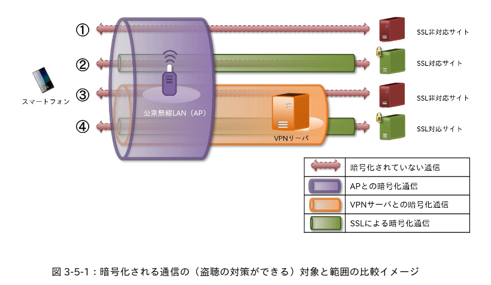

「門番」としての VPN

VPN とは
まずは VPN についておさらい。
VPN（Virtual Private Network）とは，物理的な回線・ネットワークの上に構築された「
- カプセル化とトンネリング
- 経路の暗号化
- 認証とアクセス制御
を挙げ，これらの要件を満たした製品・サービスを VPN と呼ぶことにする。 この定義でいくと OpenSSH や Tor (The Onion Router) も VPN に分類できる。
VPN は目的別に以下の3つに分類できるだろう。
- 拠点間 VPN
- リモートアクセス
- バイパス型 VPN
「拠点間 VPN」は昔でいうところの「専用線」の代わりになるものだ。 「リモートアクセス」は企業イントラネットやプライベート・ネットワーク内部に外からアクセスするもので，近年では BYOD (Bring Your Own Device) とも呼ばれている。
「バイパス型 VPN」は6年前に私が勝手につけた名前だが，他の2つと異なり，アクセスを行う利用者から見て，出口ノードがインターネットになっている点が特徴である。

たとえば，上の図のように，公衆無線 LAN などの信用度の低いネットワークを経由してインターネットに接続したい場合に「バイパス型 VPN」が使える。 また異なるリージョンのコンテンツにアクセスするために使われることもある1。
「門番」としての VPN
先程の図を見ると分かるように「バイパス型 VPN」は利用者とインターネット上のコンテンツとを仕切る「門番」として機能している。 こうした「門番」の役割は本来は ISP 等が担っているもので，それが「バイパス型 VPN」によってシフトしてしまっているのだ。
したがって「バイパス型 VPN」を運営するサービス・プロバイダが「門番」として（少なくとも ISP 並に）信用できるか否かがとても重要となってくる。
ログ収集ポリシー
技術的な観点はひとまず置いておいて，「バイパス型 VPN」サービス・プロバイダの信用度を計る目安としてよく引き合いに出されるのが「ログ収集ポリシー」である。
たとえばサービス・プロバイダが収集した利用者のアクセスログを第三者に売ったり，あるいは公的機関から提出を求められる（大抵は拒否できない）場合がある。 なので，サービス・プロバイダが利用者に関するどのような情報を持っていてそれらをどのようにして管理しているか，を知ることが大事である。 そしてその最善は「ログ収集しない」ことである。
TorrentFreak では以下の質問を「バイパス型 VPN」のサービス・プロバイダ各社に送って
- Do you keep (or share with third parties) ANY data that would allow you to match an IP-address and a timestamp to a current or former user of your service? If so, exactly what information do you hold/share and for how long?
- What is the name under which your company is incorporated (+ parent companies, if applicable) and under which jurisdiction does your company operate?
- What tools are used to monitor and mitigate abuse of your service, including limits on concurrent connections if these are enforced?
- Do you use any external email providers (e.g. Google Apps), analytics, or support tools ( e.g Live support, Zendesk) that hold information provided by users?
- In the event you receive a DMCA takedown notice or a non-US equivalent, how are these handled?
- What steps would be taken in the event a court orders your company to identify an active or former user of your service? How would your company respond to a court order that requires you to log activity for a user going forward? Have these scenarios ever played out in the past?
- Is BitTorrent and other file-sharing traffic allowed on all servers? If not, why? Do you provide port forwarding services? Are any ports blocked?
- Which payment systems/providers do you use? Do you take any measures to ensure that payment details can’t be linked to account usage or IP-assignments?
- What is the most secure VPN connection and encryption algorithm you would recommend to your users?
- Do you provide tools such as “kill switches” if a connection drops and DNS/IPv6 leak protection? Do you support Dual Stack IPv4/IPv6 functionality?
- Are any of your VPN servers hosted by third parties? If so, what measures do you take to prevent those partners from snooping on any inbound and/or outbound traffic? Do you use your own DNS servers?
- In which countries are your servers physically located? Do you offer virtual locations?
その結果を公開している。
まぁ，結果はリンク先を見ていただくとして，実はこの話には続きがある。
「バイパス型 VPN」で「ログ収集しない」と謳うサービス・プロバイダは，匿名性を高めるために，接続ごとに共有 IP アドレスを割り当てるのだが，どうも拡張サービスとして専用あるいは固定の IP アドレスを付与することができるそうで，この場合は（当たり前だが）完全に「収集しない」とは行かないらしい。
Broadly speaking, we would say that the “no logs” policies of VPN providers don’t apply to dedicated IPs. That conclusion is backed up by several VPN providers we reached out to, which include VPNArea, NordVPN, CyberGhost, and Torguard.
These providers all have a no-logging policy for their regular VPN service, which relies on shared IP-addresses. However, they see dedicated IP-addresses as a separate and different service, which is treated differently anonymity-wise.
By connecting through a single IP-address, monitoring outfits can build up a profile of the user’s online activity. The real anonymity tradeoff, however, is that the VPN provider knows the user’s IP-address and can connect it to other account information it has on record. This sometimes includes an email address.
いくつかのインターネット・サービスでは，リージョンを跨いでアクセスされないよう VPN 接続の ブラックリスト おっと拒否リストを持っているそうだが，専用 IP アドレスのオプションを利用することによりこれらを回避できるようだ。
With a dedicated IP-address, which is often sold as an add-on, users get a unique IP-address as opposed to a shared one. This can be very convenient as it reduces annoying captchas and can bypass regular VPN blacklists.
こうした利便性を得る
F-Secure FREEDOME は止めとけ？
ところで，先程の Which VPN Providers Really Take Anonymity Seriously in 2020?
の中に私が Android 端末で愛用している F-Secure 社の FREEDOME が見当たらなかったので軽くググってみたが，どうも最近は FREEDOME は忌避されているらしい。
FREEDOME はログ収集を行ってると言われていて，そこが嫌われている原因のひとつかも（笑）
これについては，一応 F-Secure 社側の釈明もあるようで
ほとんどのVPNと同様に、FREEDOMEは接続ログを作成します。これらのログは、サービスの提供と改善のために使用されます。当社のプライバシーポリシーに記載されているように、サービスを提供し、データ転送をクリーンな状態に保つだけの目的で通信トラフィックを分析します。トラフィックは仮名化されていますので、私たちにはどれがあなたのトラフィックかを知ることはできません。FREEDOMEはトラフィックログを作成しません。
というわけで，接続ログはあるけどトラフィックログは作らないので，ログから（閲覧・購入履歴，メッセージなどの）センシティブ・データを抜いたりできないよー，ということらしい。
とは言え，昔に比べて FREEDOME の優位性が薄れているのも確かなんだよなぁ。 まぁ，来年3月まで FREEDOME の契約が残ってるので，それまでに NordVPN とか他のサービスに乗り換えるべきかじっくり考えてみるとしよう。
【2020-07-21 追記】 無料（Free）の VPN サービスは止めとけ！
日本語圏でも言及されているようなので追記しておく。
話題になっている UFO VPN およびその系列のサービスは “free” であることが売りである。 ここでいう “free” は（「自由なソフトウェア」ではなく）「無料のビール」のほうの “free” を指している。 “Free” だからといって VPN プロトコルも暗号スイートも明示しないサービスを信用しろというのは無理な話。
「無料」のサービスというのは無料なりの理由があって，「監視資本主義」の時代に於いて，大抵の場合は利用者の行動履歴と引き換えになっている。
もちろん人によっては自身の行動履歴と引き換えにしても受けたいサービスはあるものなので（Gmail とか Instagram とか Twitter とかw）一概にその「引き換え」自体が悪いとは言わないが，少なくとも「門番」として機能する「バイパス型 VPN」においては利用者もセキュリティやプライバシーに細心の注意を払うべきである。
まぁ，公表しているポリシーを偽るのは論外だけどな（笑）
ぶっちゃけ，年間数千円で身元の確かな「バイパス型 VPN」サービスが買えるのなら安いものである。 いまどき気休めでしかない「malware 対策ソフト」にお金を払う余裕があるのなら2，こういったサービスにこそ投資すべきだと思うよ，おぢさんは。
最後に老婆心ながら。 「バイパス型 VPN」が「門番」として機能する以上，国や地域によってはサービスが機能しなかったり稼働しているサービス自体がプライバシー・リスクを孕んでいることを考慮したほうがいいだろう（婉曲表現）。
【おまけ】 NSA による VPN セキュリティ管理の5箇条
米国 NSA から VPN セキュリティに関する以下のドキュメントが公開されている。 どちらかと言うと組織内のネットワーク管理者あるいはサービス・プロバイダ側の話かな。
これによると，ネットワーク管理者は VPN の運営について以下の5つを定期的に確認・実行する必要がある，と謳っている。
- Reduce the VPN gateway attack surface
- Verify that cryptographic algorithms are Committee on National Security Systems Policy (CNSSP) 15-compliant
- Avoid using default VPN settings
- Remove unused or non-compliant cryptography suites
- Apply vendor-provided updates (i.e. patches) for VPN gateways and client
詳しい内容はドキュメントを参照のこと。
まぁ，当たり前の話なんだけど Avoid using default VPN settings
はちょっと面白かったので。
そんなに既定の設定はあかんのか？
ブックマーク
参考図書

- 超監視社会
- ブルース・シュナイアー (著), 池村 千秋 (翻訳)
- 草思社 2016-12-13 (Release 2017-02-03)
- Kindle版
- B01MZGVHOA (ASIN)
実は積ん読のまま読んでない。そろそろちゃんと最後まで読まないと。
-
つか，元々の「バイパス型 VPN」の動機は他リージョンのコンテンツにアクセスするためなのだが（笑） ↩︎
-
「malware 対策ソフト」が不要と言ってるわけじゃないよ，念のため。たとえば Windows は自前で malware 検知の仕組みを持ってるし Linux はオープンソース製品を組み込めばよい（そういや Microsoft も Linux 版の製品を出してたな）。アプリストアの仕組みを持っているプラットフォームではアプリストア側で malware 検知を行っている。サーバ管理でもない限り通常はこれで十分間に合う。 ↩︎